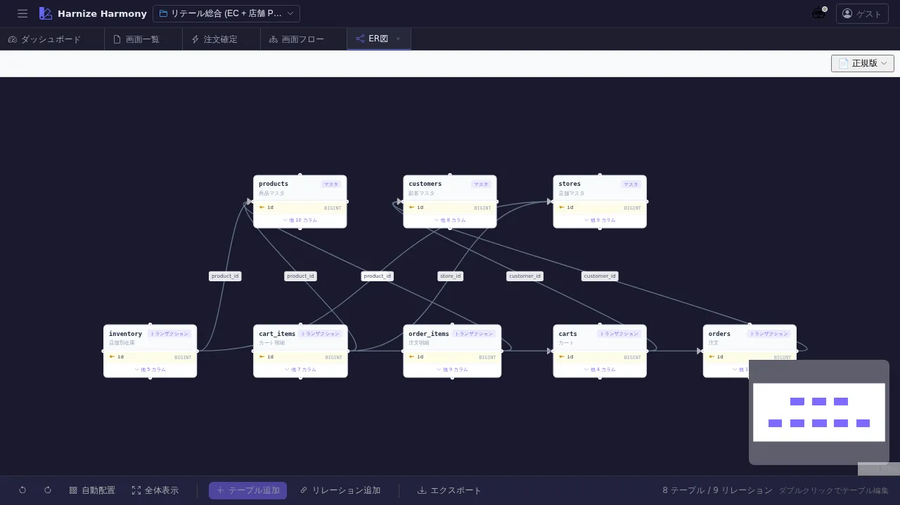

ER 図
対象画面:
ErDiagram(frontend/src/components/table/ErDiagram.tsx) ルート:/w/:wsId/table/er種別: シングルトンタブ
概要
プロジェクトの全テーブル (Table リソース) のリレーションを Mermaid ER 図 で可視化する。generate_er_mermaid MCP tool で生成される ER 図を表示し、エンティティ間の relation (1-N / N-1 等) を一覧する。テーブル定義の整合性レビューやドメインモデル説明資料として利用。
到達経路
- HeaderMenu → 「テーブル」→ 「ER 図」
- ダッシュボード「機能別定義数」パネル → テーブル数バッジクリック
- 直接 URL:
/w/<wsId>/table/er
画面構成

主要エリア
- ヘッダー — タイトル「ER 図」+ 再生成ボタン + 形式切替
- Mermaid ER 図エリア — SVG 描画されたエンティティ群と relation
- 各エンティティ: テーブル名 + カラム一覧 (PK / FK アイコン付き)
- relation 線: 1-1 / 1-N / N-M を Mermaid 記法で表現
- エラー表示 — Mermaid syntax error / 参照不整合があればここに表示
主要操作
| 操作 | 手段 | 結果 |
|---|---|---|
| 再生成 | 「再生成」ボタン | テーブル定義から ER 図を再構築 (テーブル追加 / カラム変更後に手動更新) |
| Mermaid ソース表示 | 「ソース表示」切替 | SVG 図と Mermaid テキストを切替 |
| テーブル定義ジャンプ | エンティティクリック (一部対応) | /table/edit/:id を新タブで開く |
| ズーム | ブラウザの ctrl+scroll | SVG 拡大縮小 |
データ前提
- 空状態: 「テーブルが未登録です」プレースホルダ、何も描画されない
- 意味のある状態: retail サンプルでは Order / OrderItem / Customer / Product / Inventory 等 10+ テーブル + 主要 FK が描画される
- relation は table の
foreignKeys/relationsフィールド から自動推定。明示的に書いていない場合は edge が出ない
関連仕様書
docs/spec/schema-design-principles.md— テーブル / カラムの命名規約 (ER 図にも反映)
関連 skill
/generate-codeのprisma/flyway系 techStack で本 ER 図と整合する DDL を生成可能
既知の制約・注意
- 手動再生成式 — テーブル定義を変更しても自動再描画されない (パフォーマンス対策)
- Mermaid v10 系の表現範囲内 (super-type / interface 系の継承は未対応)
- 大規模スキーマ (50+ テーブル) では一覧性が落ちるため、サブセット表示の将来検討余地あり